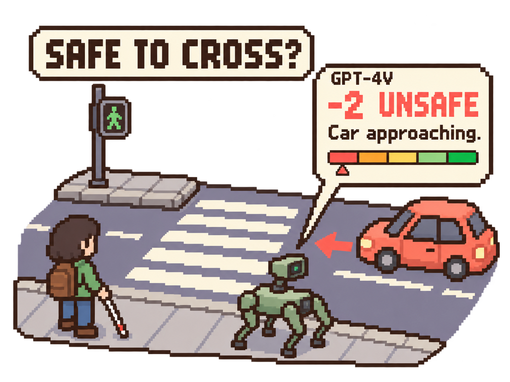
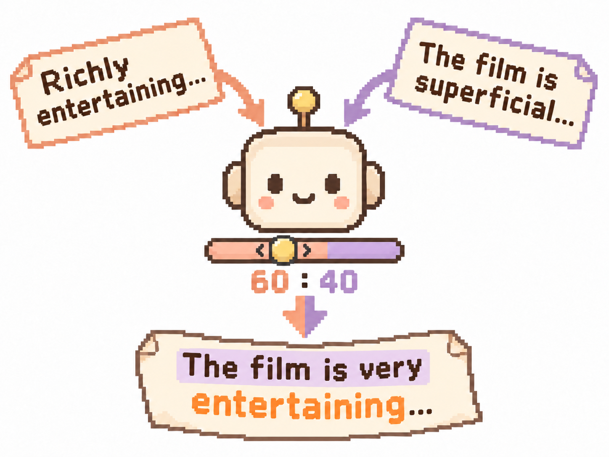
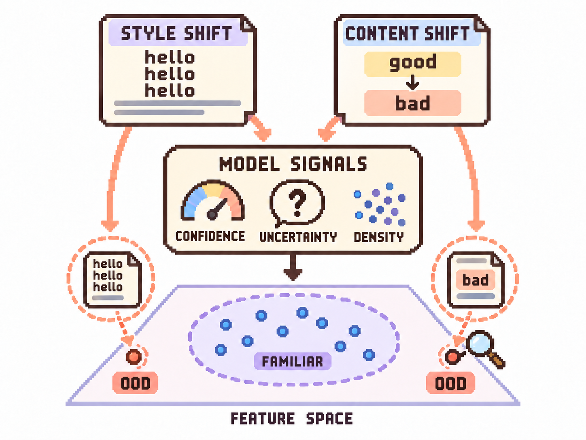
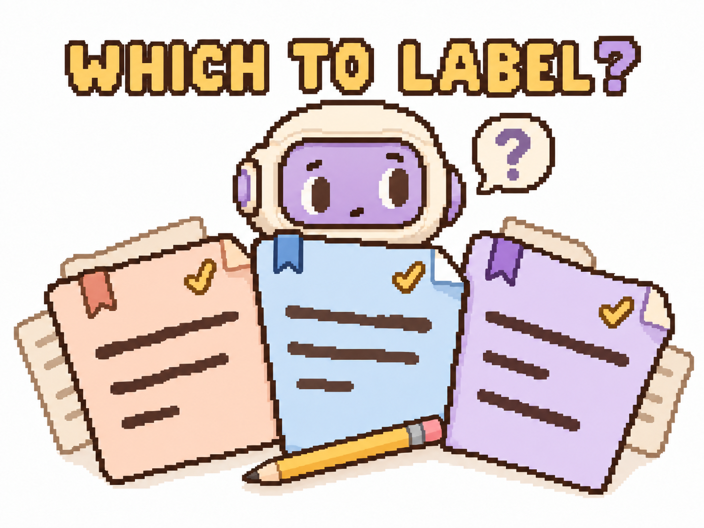
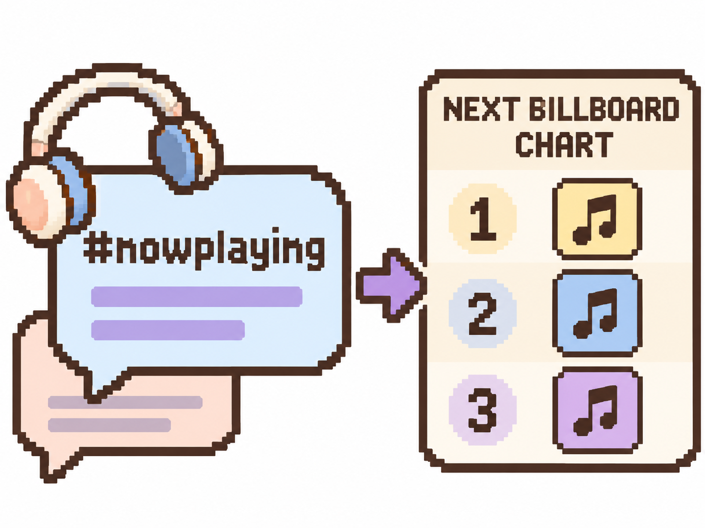

What ideas get lost when models write, and why?
Different LLMs converge on the same arguments, often favored by LLM judges and reward models (Argument Collapse).
I am a fourth-year Ph.D. student at the University of Maryland, CLIP Lab, advised by Mohit Iyyer. I began my Ph.D. at UMass Amherst and moved to UMD with my advisor.
How can we tell whether models are truly getting better?
My goal is to build reliable self-improving models. I’m particularly interested in tasks where output quality is not easily verifiable, such as long-form writing.
Different LLMs converge on the same arguments, often favored by LLM judges and reward models (Argument Collapse).
Factuality and faithfulness in long-form generation, and long-context understanding (FABLES, VeriScore, OneRuler).
Exploring unslopping and user simulation to make self-refinement more effective (ongoing).
Using synthetic data to improve instruction following (BLEUBERI) and retrieval over complex, real-world documents (ongoing).
| Aug 2026 | Argument Collapse was accepted to EMNLP 2026 (main)! |
|---|---|
| Jun 2026 | Started interning at the Document Intelligence Lab, Adobe (primary mentor: Joe Barrow) |
| Sep 2025 | BLEUBERI was accepted to NeurIPS 2025! |
| Jul 2025 | OneRuler was accepted to COLM 2025! |
| Sep 2024 | VeriScore was accepted to EMNLP Findings 2024. |
| Jun 2024 | Is It Safe to Cross? was named a Best Paper Finalist at UR 2024! |
| May 2024 | FABLES was accepted to COLM 2024. |





Before my Ph.D., I worked at Hyundai Motor Group and LG Electronics as a research engineer. I was selected as a specialist in AI and conducted research at CMU LTI as a visiting scientist mentored by Jaime Carbonell.
I enjoy video games, especially Dark Souls, Darkest Dungeon, Hollow Knight, and pixel-art games like Stardew Valley. I’m also a fan of escape rooms, but clueless lol. I love finding great boba spots.